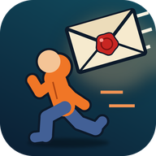

DON'T SIGN IT!The game is developed by FlorencoTech. Contact: ig.vasylenko2@gmail.com.
The game has no accounts and no registration and does not ask for your name, e-mail, contacts, photos or location. Your progress (score, coins, outfits, settings) is stored only on your device, in the app's local storage. It is not sent to us. If Android backup is turned on for your Google account, Android may include this data in your device backup, according to your system settings.
The game can show optional rewarded video ads: you choose to watch one to continue a run. Ads are served by Google AdMob (Google Mobile Ads SDK). To show and measure ads and to prevent fraud, the SDK automatically collects and shares with Google:
This data is encrypted in transit (TLS). How Google uses it: policies.google.com/technologies/partner-sites. Ad content in the game is limited to the PG rating.
In the EEA, the UK and Switzerland (and wherever the law requires it) the game asks for your consent through Google's consent form (User Messaging Platform) before personalised ads are shown. You can change your choice at any time in Settings → Privacy options. On any device you can reset or delete your advertising ID in Android settings (Settings → Privacy → Ads). You can also play without ever watching an ad.
Vibration (haptic feedback), and internet and network state (only to load ads and the consent form).
When you tap "Share", the game draws a picture of your run on your device and passes it to the app you choose in the Android share sheet. We do not receive it.
The game is intended for users aged 13 and over and is not directed at children under 13. We do not knowingly collect personal data from children.
Uninstall the game or clear its data in Android settings (Settings → Apps → Don't Sign It! → Storage → Clear data). We hold no copy of your data that we could delete; for data processed by Google see the link above.
If this policy changes, the new version will be published on this page with a new effective date.
Гру розробляє FlorencoTech. Контакт: ig.vasylenko2@gmail.com.
У грі немає акаунтів і реєстрації, вона не запитує ім’я, e-mail, контакти, фото чи геолокацію. Прогрес (очки, монети, образи, налаштування) зберігається лише на вашому пристрої, у локальному сховищі застосунку, і нам не надсилається. Якщо в Android увімкнено резервне копіювання в акаунт Google, система може включити ці дані в резервну копію пристрою відповідно до ваших налаштувань.
Гра може показувати необов’язкову рекламу з винагородою: ви самі вирішуєте переглянути її, щоб продовжити забіг. Рекламу показує Google AdMob (Google Mobile Ads SDK). Щоб показувати й вимірювати рекламу та запобігати шахрайству, SDK автоматично збирає й передає Google:
Ці дані шифруються під час передавання (TLS). Як їх використовує Google: policies.google.com/technologies/partner-sites. Вміст реклами в грі обмежено рейтингом PG.
У ЄЕЗ, Великій Британії та Швейцарії (і всюди, де цього вимагає закон) гра запитує вашу згоду через форму Google (User Messaging Platform), перш ніж показувати персоналізовану рекламу. Змінити вибір можна будь-коли в Налаштування → Параметри конфіденційності. На будь-якому пристрої рекламний ідентифікатор можна скинути або видалити в налаштуваннях Android (Налаштування → Конфіденційність → Реклама). Грати можна й зовсім без реклами.
Вібрація (тактильний відгук), доступ до інтернету й стану мережі (лише для завантаження реклами та форми згоди).
Коли ви натискаєте «Поділитися», гра створює картинку забігу на вашому пристрої й передає її застосунку, який ви обрали в системному меню. Ми її не отримуємо.
Гра призначена для користувачів від 13 років і не орієнтована на дітей до 13 років. Ми свідомо не збираємо персональні дані дітей.
Видаліть гру або очистіть її дані в налаштуваннях Android (Налаштування → Застосунки → Не підписуй! → Пам’ять → Очистити дані). У нас немає копії ваших даних, яку можна було б видалити; щодо даних, які обробляє Google, дивіться посилання вище.
Якщо політика зміниться, нова версія з’явиться на цій сторінці з новою датою набрання чинності.